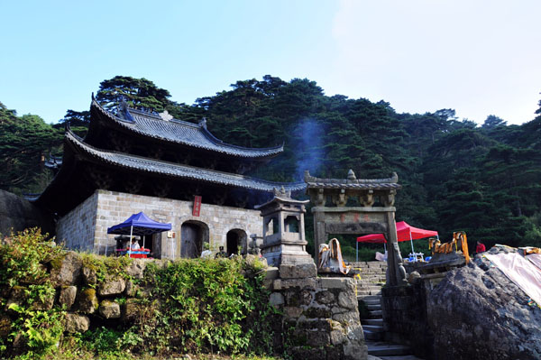
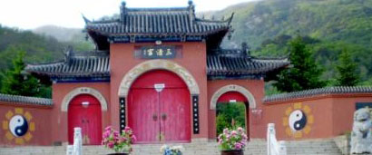
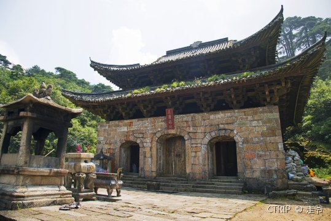
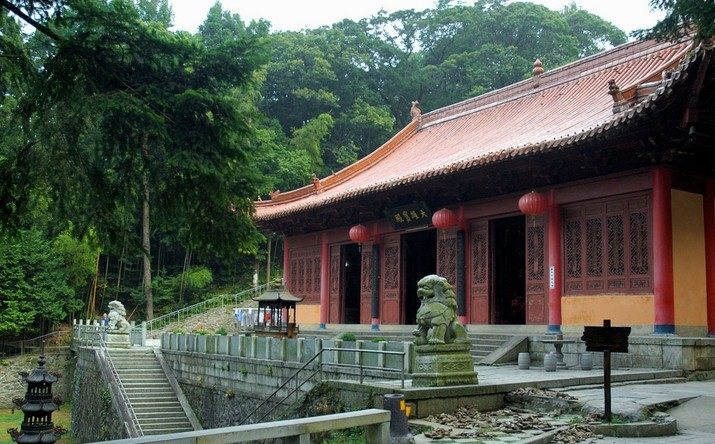
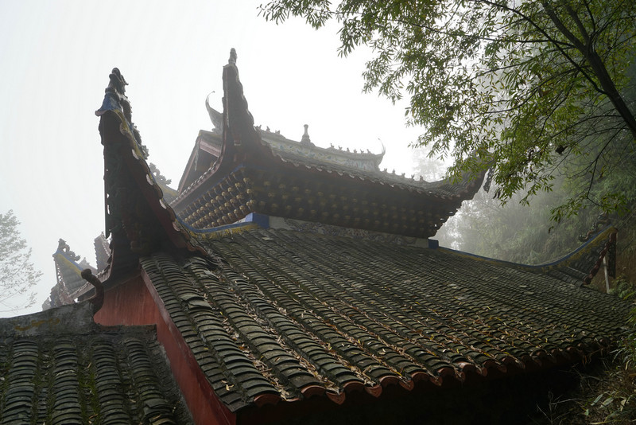
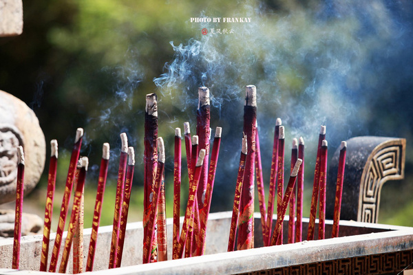

三清宫位于江西上饶市三清山的北部，是三清山人文景观的集萃地，也是道教古建筑群的“露天博物馆”，景区平均海拔约1530米，范围上至“九天应之府”，下至“风门”。三清宫景区历时1600多年，源远流长，共有观、殿、府、坊、泉 、池、桥、墓、台、塔等230多处古建筑及文物。这些古建筑及文物依据“先天八卦图式”精巧布局，是研究我国道教古建筑设计布局的宝地。
三清宫是三清山人文景观集中的景区，只有游览三清宫，才能发现道教文化在塑造三清山的品性中所起到的重要作用。
三清宫景区古建筑群的“先天八卦”布局方式非常值得细细玩味，它是整个布局的核心，其它建筑围绕这个核心往八方辐射，各占一卦的位置。
三清宫景区的景点造型设计非常特别。这里的建筑规模都不大，但在造型上却有很高的造诣。风雷塔的设计、龙虎殿的选址等，都体现了道家“道法自然”的运用和对“天人合一”的追求。人文、自然景观浑然交融，不分彼此。
 三清宫景区是消耗体力较少的景区，一般游客只游三清福地，而三清福地是一个高山小盆地，高低落差较小，主要的古建筑相对较集中，故游三清宫景区较轻松，只需 1小时左右的游览时间。游览三清宫可以持着一份悠闲的心境，慢慢体会。
位于雄居南郊群山之巅的云际山。总体建筑面积约 2800平方米 ，三清殿大殿系其主殿，该殿为重檐歇山式屋顶五步梁十一檩抬梁式屋架，四侧翼角高翘，金柱全部采用建瓯特色树种——锥栗原木，这在锥栗之乡亦属罕见。
三清宫大殿座西朝东，面积 960平方米 ，分前后两进，前殿有三个大门，当中大门上方有直匾一块，上书“三清殿”。殿内正中供奉道教鼻祖：玉清元始天尊、上清灵宝天尊、太清道德天尊三尊雕像。后殿供奉福禄寿喜四大仙。三清宫建筑群依山而建，在三清殿北侧有百仙殿和吕祖殿。大殿广场下方是历史名泉鹿乳泉，此泉由古至今从不干涸，明万历丁末年瓯宁知县骆骎曾在此建“一泉亭”。铁狮峰是云际山之最高峰，其上建有龙王殿、五谷仙殿。三清宫背山面水，已成为建瓯市民探幽访胜、登山晨练的好去处。